Your first chatbot
When you login for the first time, you arrive in Builder Page
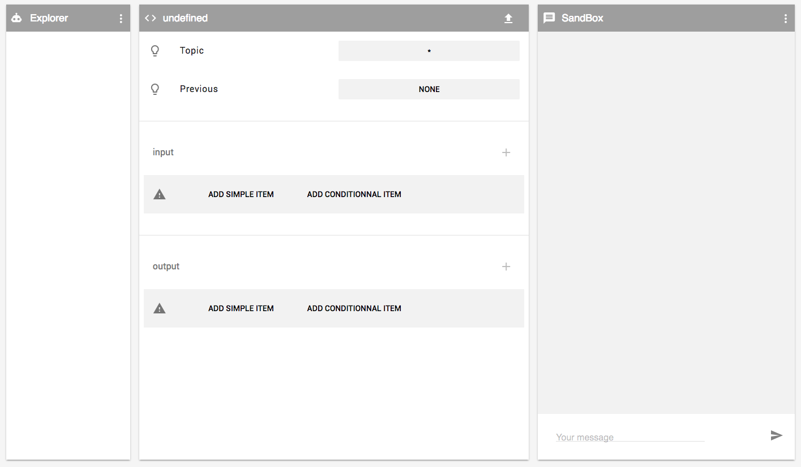
Interface
Explorer : the list of intents. you could add, select, delete, move, rename an
intent.
Intent detail : In this panel you will edit the selected intent. And save it.
Sandbox : test directly the conversation with intents you just created.
Add an intent
An intent is a component that will response (output) to a sentence
or a media (input) that a user send to an assistant.
1 - In Explorer menu select "add intent"
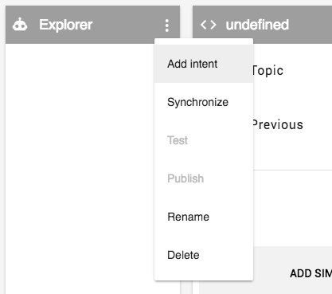
2 - A dialog appears, set intent name like "Hello". And click "CREATE"
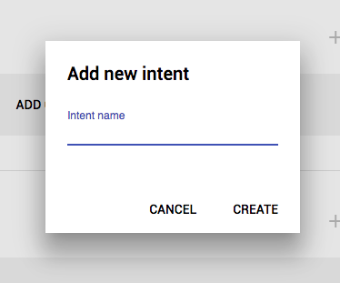
3 - Now in the Explorer list your intent "Hello" is visible and selected. In Intent
Detail you see it is name in the gray bar on top.

4 - In Intent detail we setup input. You select "ADD SIMPLE ITEM". in the dialog set
the input text "Hello"
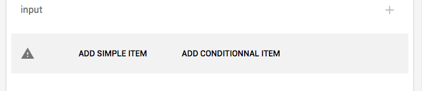
5 - You now have one input text : "Hello"
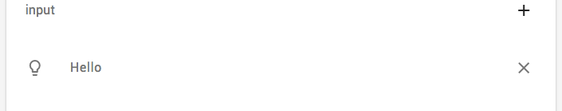
6 - The same way we setup output. You select "ADD SIMPLE ITEM". in the dialog set
the input text "Hello {{userprofile.username}} !". You will get this output.
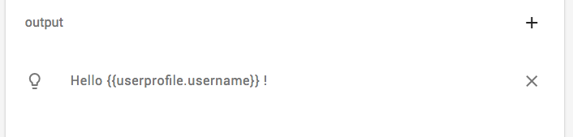
{{userprofile.username}} is a variable from the context that will
display username in the output text.
7 - In the Intent Detail titlebar next to intent's name you see a star. It indicates
you need to save it before using it. the up arrow icon at the right in the titlebar. Click on it and the star
disappears. You could now test your intent.
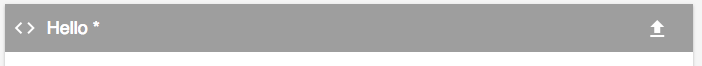
Test an intent
1 - Go to sandbox textfield "Your message" and type "Hello". And press send icon.
2 - A conversation appears. And you see that your assistant replied with the correct
username.
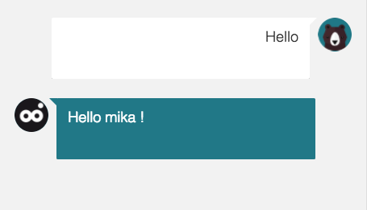
3 - You want your chatbot to reply to "Hello Buddy" or any "Hello xxx yyy". Go back
to intent's input in detail panel, and add a new input, using "+" icon. type "Hello *" in dialog. And don't forget
to save it. You now have two inputs.
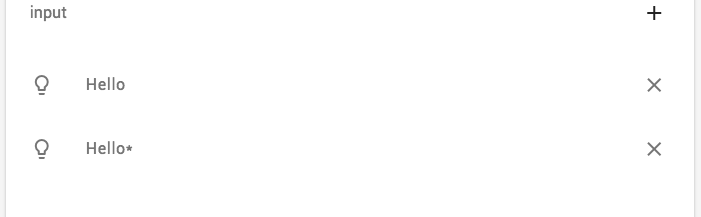
4 - Type in the sandbox textfield "Hello Buddy !", and send. Your bot will reply as
previously.
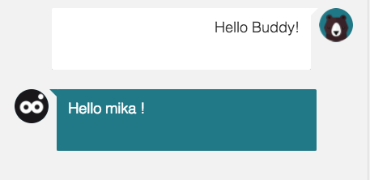
5 - Create a new intent "How are you" that will reply "Fine an you ?". And test it
in sandbox. You will get this.
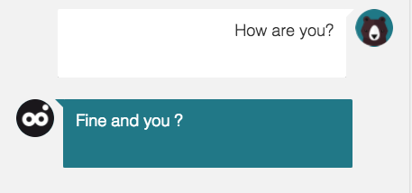
6 - That's it! You could create as many intents you want and test/change them. And
much more could be done !
A tips : In sandbox menu you could clear the conversation/context to start a new
conversation.
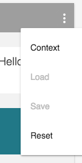